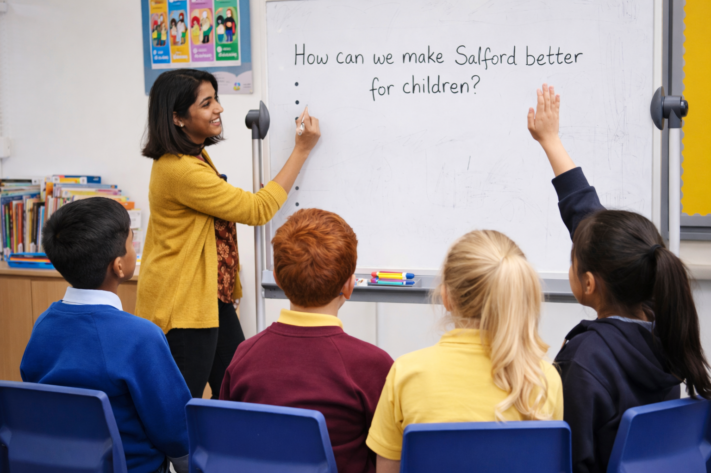

Families & Young People
This section is for children, young people and families. It provides clear information about Child Friendly Salford, along with ways to learn more, share views and get involved as the programme develops across the city.

What this programme means
Child Friendly Salford is about making sure children’s rights are understood, respected and supported locally. It focuses on listening to children and young people, taking their views seriously and helping them feel safe, valued and included in decisions that affect their lives.
Get involved
There are different ways for children, young people and families to get involved, including sharing feedback, taking part in activities and staying informed about what’s happening. New opportunities will be added as the programme continues to grow.
Contact / forms